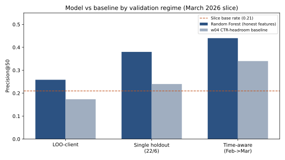
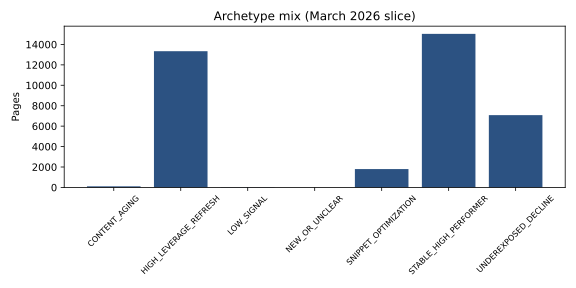
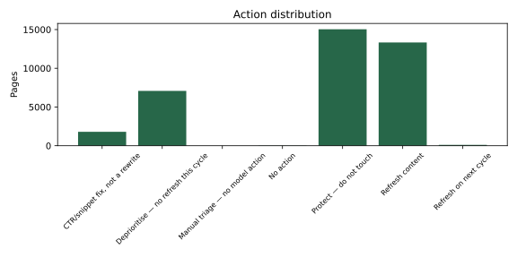

Ranking Pages for Content Refresh: An Honest Baseline, a Leaky Model, and a Prioritisation Playbook
FlyRank ML Internship · October 2026
Abstract
Given a limited weekly content-refresh budget, which pages should an editor refresh first when organic impressions are falling? On a pseudonymized March 2026 panel from the FlyRank internship warehouse (37,385 in-scope pages, decision date 2026-03-31), we ranked pages by decline probability using four post-leakage-fix features and compared a Random Forest to a CTR-headroom rule baseline. Validation combined a single client holdout, leave-one-client-out folds, and a February-to-March time split, with explicit leakage checks that excluded prior-impression transforms tied to the label. The single holdout measured P@50 = 0.38 for the model versus 0.24 for the same-split baseline, while the time-aware check measured 0.44 on the full March frame—both optimistic relative to grouped generalization. The honest generalization read is LOO-client P@50 = 0.258 ± 0.237 (seven folds at 0.0), a directional decision-support lift over the LOO baseline mean of 0.17, not proof that refresh will recover traffic.
1. Introduction / Problem statement
Content teams operate under a fixed weekly refresh budget. When impressions soften, the operational question is not “is this page declining?” in isolation—it is which declining or at-risk URLs deserve scarce editor hours first. A flat classifier can be accurate on average while still mis-ordering the queue, wasting capacity on low-upside pages and leaving high-exposure URLs unattended.
This paper studies refresh prioritisation on a real production search panel: page-level Google Search Console aggregates joined to content metadata, pseudonymized at client and URL granularity. The cost of a wrong call is measured in editor time (false positives) and uncaptured demand (false negatives on high-impression URLs).
We contribute an audited ranking pipeline—honest features after a leakage catch, a transparent rule baseline, grouped validation, and a human-reviewed action playbook. Claims are framed as decision-support for triage, not automation or causal recovery promises.
2. Data
Release: FlyRank/internship-warehouse on Hugging Face. Tables: fact_content_daily_performance and dim_content. Development month: month=2026-03 with decision date 2026-03-31 (37,385 page-level rows after contract filters). January–February partitions supply prior-window impression legs only.
Excluded: fact_content_daily_performance_sample (June 2026 terminal month—sealed outcome window; confirmed present but never used for features, labels, or training). Rows without reliable GSC coverage (gsc_data_available IS NOT TRUE) are dropped. Trend fields used in the label are not fed as model inputs.
Public safety: All rows use hashed client and content identifiers. This paper and its notebooks contain no client names, live URLs, or private search queries.
3. Methodology
Label definition
Decline label: last-30-day impressions fell more than 20% versus the prior 30 days when the prior window had positive volume (trend_direction = down). Slice base decline rate ≈ 0.21.
Features (honest four)
imp_last30, avg_pos_last30, ctr_last30, content_age_days. Model: Random Forest (balanced subsample, depth 10, 200 trees, random_state=42).
Leakage fix
log_imp_prev30 was removed: it is a monotone transform of imp_prev30, which enters the label. With it included, holdout P@50 approached 1.00; with four honest features, the same split measured 0.38 in the w06 audit re-run.
Baseline
w04 CTR-headroom rule: rank by impressions_90d × max(0, tier_median_ctr − ctr_last30) × tier_weight (position-tier weights from w04). Evaluated with the same Precision@50 ranking metric as the model.
Validation design
- Single client holdout (~22 train / 6 test clients): w05 design, reproduced in w06.
- Leave-one-client-out (LOO): train on 27 clients, rank within held-out client pages; report mean ± std P@50 (headline).
- Time-aware: train on February decision slice, score all March pages.
Leakage checks
w03 trend-feature demo; w05 log_imp_prev30 ablation; w06 full re-run with baseline recomputed on each split.
4. Results
| Regime | P@50 | Notes |
|---|---|---|
| In-sample (w05 reference) | 0.92 | Calibration only—not for claims |
| w05 single client-holdout (22/6) | 0.38 | Optimistic vs LOO |
| Leave-one-client-out (mean ± std) | 0.258 ± 0.237 | P@50 within each client; 7 folds at 0.0 |
| Time-aware (train Feb, test Mar) | 0.44 | Full March ranking frame |
| w04 baseline (full slice) | 0.34 | Reference only |
| w04 baseline (same split as w05 holdout) | 0.24 | Apples-to-apples vs holdout RF |
| w04 baseline (LOO-client mean) | 0.17 | Same LOO protocol as RF |

The model’s honest performance is LOO-client P@50 = 0.258 ± 0.237—a directional lift over the LOO baseline of 0.17, not the strong lift the single holdout suggested (0.38 vs 0.24). Seven client folds scored 0.0 at P@50 (no declining pages in the client-level top 50), which drives the wide standard deviation. w05 prose once cited 0.40; that figure appears only as a historical audit reference—the executed w05 table and w06 re-run do not support it as a headline. See Figure 1.
5. Limitations & honest framing
- Client heterogeneity: LOO-client P@50 standard deviation is 0.237 with seven folds at 0.0—measured queue value is uneven across clients.
- Observational label: Decline is GSC momentum, not post-refresh traffic recovery; findings are decision-support, not causal.
- Single primary month: Features and labels are anchored on
month=2026-03; Feb→Mar is one time check, not a full backtest. - Holdout optimism: Single holdout P@50 (0.38) exceeds LOO mean (0.258); public claims must use LOO.
- Precision at fixed K: At LOO P@50 ≈ 0.26 and base rate ≈ 0.21, expect roughly thirteen true declines per client-level top-50 batch and substantial false positives—editorial cost matters.
- Playbook layer: Archetypes and reason codes translate ranks into editorial verbs; they were not separately validated as outcome predictors.7
6. Ranked recommendations
The w07 playbook maps each page to an archetype, reason code, and action for human review. The model orders decline probability; actions below are triage guidance, not automated publishing.
| Archetype | Signature (summary) | Action |
|---|---|---|
HIGH_LEVERAGE_REFRESH | Page-one/striking tier, CTR below tier median, high exposure (≥ p75) | Refresh content |
SNIPPET_OPTIMIZATION | Top-3 tier, CTR below tier median, high exposure | CTR/snippet fix, not a rewrite |
UNDEREXPOSED_DECLINE | Deep/page_3_5, trend down, below-median exposure | Deprioritise — no refresh this cycle |
STABLE_HIGH_PERFORMER | Top-3 or strong CTR in page-one/striking | Protect — do not touch |
CONTENT_AGING | High exposure, age > 365d, CTR near tier median | Refresh on next cycle |
NEW_OR_UNCLEAR | no_data tier or new/flat trend | Manual triage — no model action |
LOW_SIGNAL | impressions_90d < 100 | No action |
Reason codes (fixed vocabulary): HIGH_LEVERAGE_REFRESH, SNIPPET_CTR_HEADROOM, UNDEREXPOSED_DECLINE, STABLE_PERFORMER_PROTECT, CONTENT_AGING_CYCLE, MANUAL_TRIAGE_UNCLEAR, BELOW_EXPOSURE_FLOOR, INSUFFICIENT_DATA.
Human-review rules: Review the top 5 pages per client_hash_id before any refresh; manually triage NEW_OR_UNCLEAR and LOW_SIGNAL; review any page with impressions_90d ≥ 50,000 even if ranked below top 50; require a reason_code in UI; editor decision overrides model rank. See Figure 2 and Figure 3.


7. Reproducibility
How to cite
Ahamed, J. (2026). Ranking Pages for Content Refresh: An Honest Baseline, a Leaky Model, and a Prioritisation Playbook. FlyRank ML Internship.
Copy BibTeX
@misc{ahamed2026ranking,
author = {Ahamed, Junaid},
title = {Ranking Pages for Content Refresh: An Honest Baseline, a Leaky Model, and a Prioritisation Playbook},
year = {2026},
howpublished = {FlyRank ML Internship},
url = {https://junaidahamed-7777.github.io/flyrank-machine-learning/}
}
8. Acknowledgments & data credit
Built on the FlyRank ML Internship dataset.